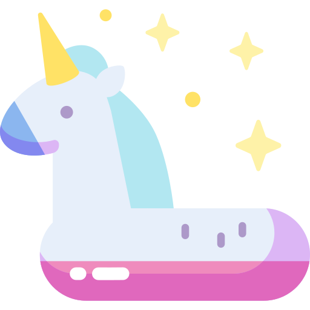

Hoy diste un gran paso en tu proceso dentro del medio acuático. 💙 Aprendiste sobre adaptación al agua, flotación, respiración básica y patada inicial. Tu confianza y control corporal han evolucionado significativamente. 🏊♂️✨
📜 En la parte inferior de este módulo podrás encontrar tu certificado de finalización. Descárgalo y celebra tu logro.

🌊 Este es solo el comienzo… ¡Nos vemos en el siguiente nivel!